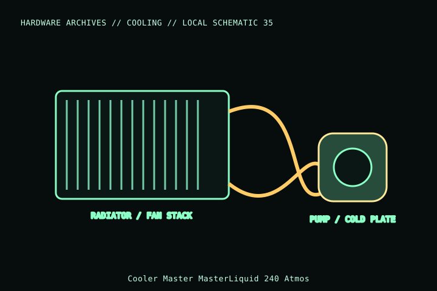

[ INDIVIDUAL COMPONENT // COOLING ]
Cooler Master MasterLiquid 240 Atmos
A 240 mm MasterLiquid Atmos all-in-one cooler with two SickleFlow Edge 120 fans. Verify Atmos model code and included fan/lighting wiring; do not infer fit from 240 mm marketing size alone.

MODEL IDENTIFICATION: Verify full model, suffix, SKU, generation, connector, and host-support documentation against the physical item. The record describes only the identified model and does not guarantee host compatibility.
Specifications
| Exact identity | MasterLiquid 240 Atmos |
|---|---|
| Radiator | 277 × 119.6 × 27.2 mm; add fan thickness, screw heads, fittings, and tube bend to fit envelope. |
| Included fans | Two SickleFlow Edge 120 fans; 120 mm PWM, with lighting/control according to the exact bundle. |
| Fan speed | 650–2,500 rpm ±10% per manufacturer specifications. |
| Pump / power | 12 V pump; refer to exact product manual for header/current details and connection sequence. |
| Socket support | Manufacturer lists Intel desktop sockets including LGA1700 and legacy mainstream sockets and AMD AM5/AM4; verify exact package bracket and current support list. |
Compatibility and installation
- Confirm 240 mm radiator space and measure radiator-plus-fan stack; top/front mounting can conflict with memory, VRM heatsinks, GPU, or side panel.
- Follow Cooler Master’s exact pump/fan/lighting wiring and socket mounting manual; use the included platform-specific bracket.
- Do not power pump or fans from an under-rated header; check the manual and host header/controller current budget.
Service notes
Do not open the sealed AIO loop. Inspect tubes, fittings, radiator and pump for leaks, damage, or abnormal noise; stop use and replace the assembly if a leak or pump failure is suspected. Clean radiator fins without bending them.
Manufacturer references
- Cooler Master — MasterLiquid 240 AtmosManufacturer product page for model dimensions, sockets, fans, and support.
- Cooler Master — SupportManufacturer manual and service references.
Model variants and revisions may change specifications or included hardware; the manufacturer’s exact product page/manual and the host manual take precedence.